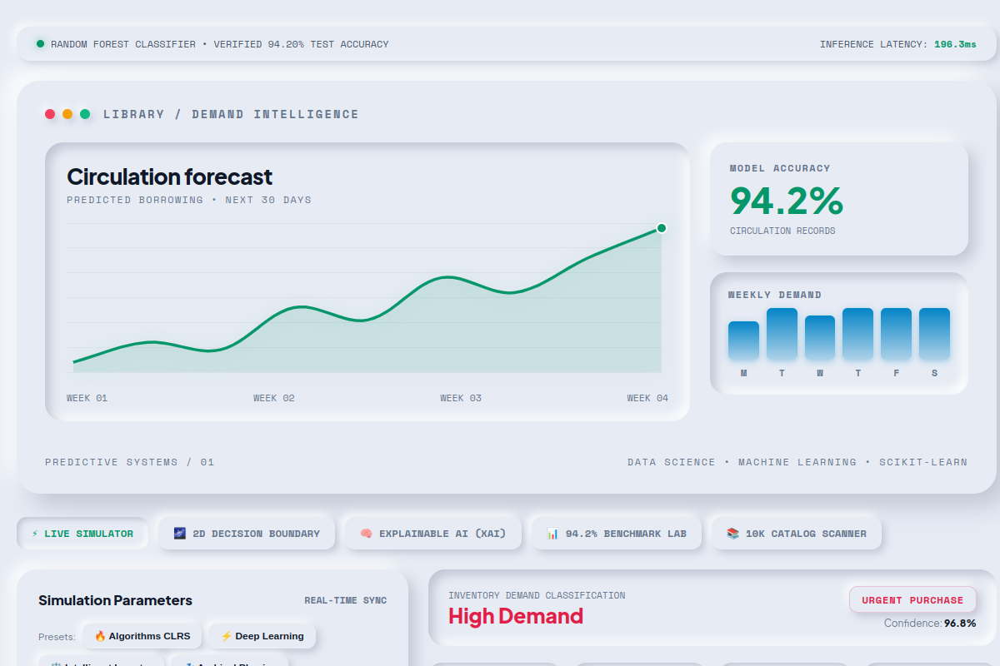

LIVE UI · SYNTHETIC BENCHMARK / 01Smart Library
Book Demand Predictor ↗
Ranks book-demand risk and suggests stock actions using circulation features, Python, Scikit-Learn, and Pandas.
Random Forest · held-out synthetic test set · not a live-library result
EXPLORE THE CASE STUDY +
THE PROBLEM
Libraries need to spot likely stockouts without tying up budget and shelf space in slow-moving titles.
THE APPROACH
Generated 10,000 synthetic circulation records, engineered hold-to-copy, turnover, demand-pressure, and inactivity features, then benchmarked Logistic Regression, Gradient Boosting, and Random Forest.
BENCHMARK RESULTS
Random Forest scored 94.20% accuracy, 95.13% precision, 87.70% recall, and 0.9419 ROC-AUC on 2,000 held-out records. It also recommends purchase, replenishment, optimal-stock, or weeding actions.
Evaluation note: The benchmark uses synthetic data; these results are not a real-library pilot or a guarantee of production performance.